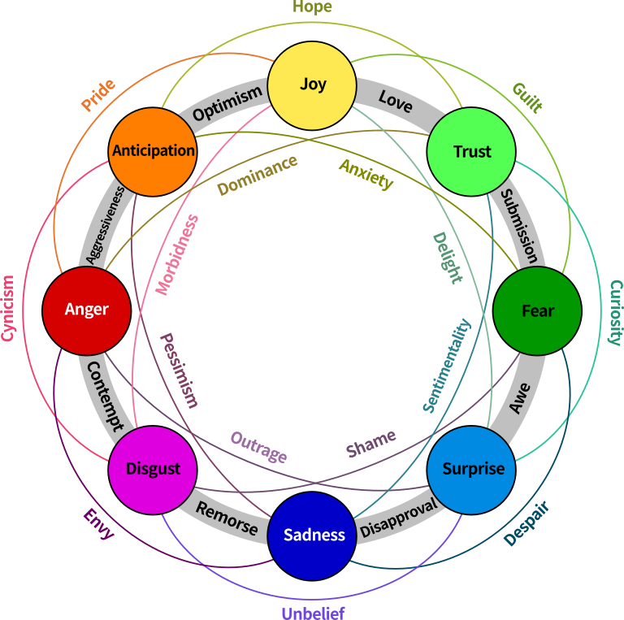
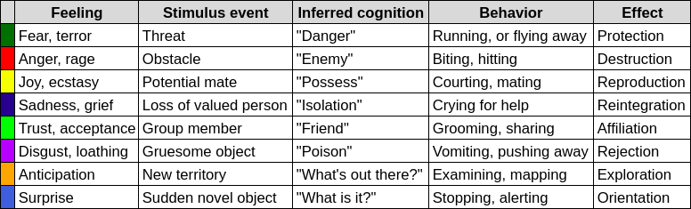
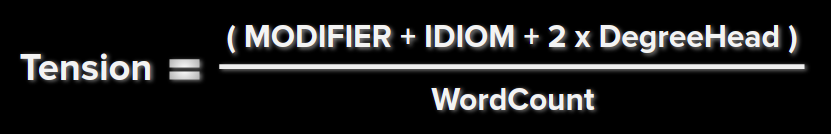
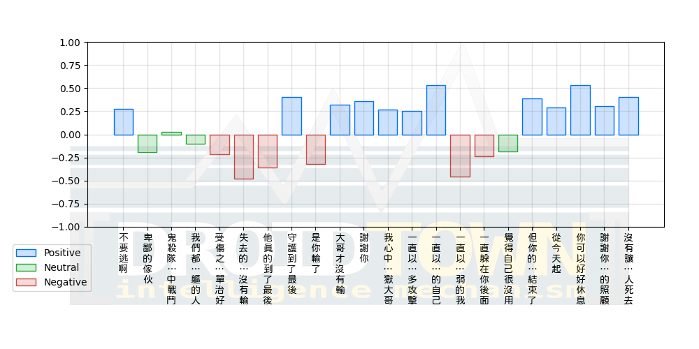
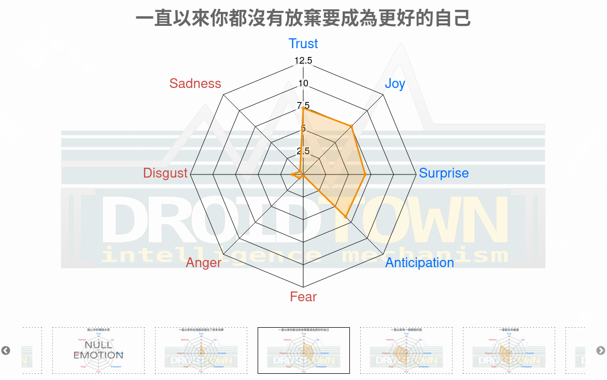
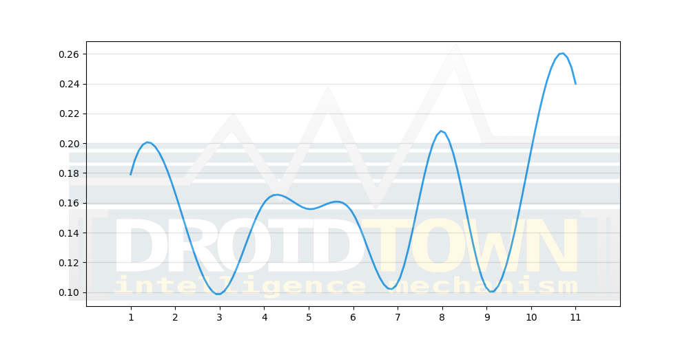

KeyMojiAPI
KeyMoji
範例程式:
from KeyMojiAPI import KeyMoji
# 若您是使用 Docker 版本，無須填入 username, username 參數
keymoji = KeyMoji(username="", keymojiKey="")
初始化 KeyMojiAPI。
參數說明
| 參數 | 型態 | 預設 | 功能 |
|---|---|---|---|
| username | str | "" | 您在本站註冊時所使用的帳號 (email)。KeyMoji Docker 版本無需設定此參數。 |
| keymojiKey | str | "" | 在本站購買KeyMoji服務，完成付費後取得的一個具有 31 字符長度的字串。KeyMoji Docker 版本無需設定此參數。 |
| url | str | "https://api.droidtown.co/KeyMoji" | 若您購買 KeyMoji Docker 版本，請設定自行架設 KeyMoji Docker 的服務網址。 |
sense2
範例程式:
inputSTR = "他逃離了危險的災難"
sense2Result = keymoji.sense2(inputSTR)
回傳結果 (JSON 格式):
{
"status": true,
"msg": "Success!",
"results": [
{
"score": 0.2798,
"sentiment": "positive",
"input_str": "他逃離了危險的災難",
"cursing": false
}
],
"sense": "sense2",
"version": "v101"
}
參數說明
| 參數 | 型態 | 預設 | 功能 |
|---|---|---|---|
| inputSTR | str | "" | 將要送上 KeyMoji 情緒偵測處理的文字。注意！每次最大長度不得超過 6000 個字符。 |
| contextSenitivity | bool | True | 語境敏感開關，預設為 True。此參數為 True 時，前句的句子若有分數，若此句計算的結果無分數，則前句的分數會延續影響此句分數，直到下一句計算的結果有分數。例如：contextSenitivity = True，inputSTR = "好不容易離開思念的軌跡，回憶將我聯繫到過去"，結果為： "好不容易離開思念的軌跡" => -0.6043, "回憶將我聯繫到過去" => -0.4532；反之，參數為 False 時，"回憶將我聯繫到過去" => 0。 |
回傳內容說明
| 回傳訊息 | 型態 | 說明 |
|---|---|---|
| status | bool | 若成功執行並收到情緒偵測結果，回傳 True；失敗，則回傳 False。 |
| msg | str | 可能為以下的文字： |
| - Success!: 順利完成情緒偵測作業。 | ||
| - Invalid arguments.: 上傳參數錯誤，請重新檢查上傳時的參數是否符合規則名稱。 | ||
| - Invalid content_type.: 上傳格式必須為 Json 格式 (application/json)。 | ||
| - Your input_str is too long (over 6000 characters.): input_str 超過 6000 字符。 | ||
| - Authentication Failed.: 無法驗証您的帳號，或是未購買KeyMoji方案。請再檢查一次您使用的帳號是否正確。 | ||
| - Invalid KeyMoji_Key.: 無效的 keymoji_key。請再檢查一次您的 keymoji_key 是否正確。 | ||
| - Invalid sense.: sense 所指定的參數不存在。 | ||
| - request['context_sensitivity'] only takes True/False.: context_sensitivity 只能是 boolean 格式。 | ||
| - request['sense'] should be set as 'tension', 'sense2' or 'sense8', other settings don't make any sense to KeyMoji.: sense 需要指定其參數為 'tension', 'sense2' 或 'sense8' 字串。 | ||
| - Interval Server Error. (System will reboot in 5min, please try again later.): 嗯…似乎我們的伺服器出了點狀況。我們正在努力修復中，5 分鐘內會自動重啟，請稍後再試一次。 | ||
| sense | str | 此次情緒偵測所使用的功能。此範例為 sense2。 |
| results | list | 以句子為一個單位，將計算結果存儲至 dict，內容包含以下 |
| - inputSTR: 單句的文字字串。 | ||
- cursing: input_str 是否含有國罵的文字內容，例：XX娘。 |
||
- score: 計算 input_str 的情緒分數。若context_sensitivity== **True** 時，會受到前句的結果影響，不同於單句計算的分數。 |
||
- sentiment: 依據語意計算結果判斷 input_str 的表述，屬於在人類情緒光譜上哪個分佈位置： |
||
--positive: 正向表述 (0.2, 1] |
||
--negative: 負向表述 [-1, -0.2) |
||
--neutral: 中性表述 [-0.2, -0.2] |
sense8
情緒又稱「情感」，是動物出於本能與生俱來的多種感覺、思想和行為綜合產生的心理和生理狀態，並與我們生活息息相關。有些複雜情緒必須經過與他人互動才能學習到，因此每個人所擁有的情緒數量和對情緒的定義都不一樣。
KeyMoji 依據美國心理學家 Robert Plutchik 提出八種主要的成對兩極核心情緒，分別為 Anger、Anticipation、Disgust、Fear、Joy、Sadness、Surprise、Trust 來做計算。

範例程式:
inputSTR = "他逃離了危險的災難"
sense8Result = keymoji.sense8(inputSTR)
回傳結果 (JSON 格式):
{
"status": true,
"msg": "Success!",
"results": [
{
"input_str": "他逃離了危險的災難",
"Joy": 3.7486,
"Trust": 5.1776,
"Surprise": 6.7238,
"Anticipation": 0.9618,
"Fear": 0.9505,
"Sadness": 0.9108,
"Anger": 0.9516,
"Disgust": 0.8876
}
],
"sense": "sense8",
"version": "v101"
}
參數說明
| 參數 | 型態 | 預設 | 功能 |
|---|---|---|---|
| inputSTR | str | "" | 將要送上 KeyMoji 情緒偵測處理的文字。注意！每次最大長度不得超過 6000 個字符。 |
PS.關於SENSE8八個維度參考的來源。
回傳內容說明
| 回傳訊息 | 型態 | 說明 |
|---|---|---|
| status | bool | 若成功執行並收到情緒偵測結果，回傳 True；失敗，則回傳 False。 |
| msg | str | 可能為以下的文字： |
| - Success!: 順利完成情緒偵測作業。 | ||
| - Invalid arguments.: 上傳參數錯誤，請重新檢查上傳時的參數是否符合規則名稱。 | ||
| - Invalid content_type.: 上傳格式必須為 Json 格式 (application/json)。 | ||
| - Your input_str is too long (over 6000 characters.): input_str 超過 6000 字符。 | ||
| - Authentication Failed.: 無法驗証您的帳號，或是未購買KeyMoji方案。請再檢查一次您使用的帳號是否正確。 | ||
| - Invalid KeyMoji_Key.: 無效的 keymoji_key。請再檢查一次您的 keymoji_key 是否正確。 | ||
| - Invalid sense.: sense 所指定的參數不存在。 | ||
| - request['context_sensitivity'] only takes True/False.: context_sensitivity 只能是 boolean 格式。 | ||
| - request['sense'] should be set as 'tension', 'sense2' or 'sense8', other settings don't make any sense to KeyMoji.: sense 需要指定其參數為 'tension', 'sense2' 或 'sense8' 字串。 | ||
| - Interval Server Error. (System will reboot in 5min, please try again later.): 嗯…似乎我們的伺服器出了點狀況。我們正在努力修復中，5 分鐘內會自動重啟，請稍後再試一次。 | ||
| sense | str | 此次情緒偵測所使用的功能。此範例為 sense8。 |
| results | list | 以句子為一個單位，將計算結果存儲至 dict，內容包含四種 正/負向情緒，共八種情緒分數[0, 12.5] |
| - inputSTR: 單句的文字字串。 | ||
| - Anger: 負向情緒分數，在 inputSTR 裡存在「憤怒」語意意涵的指數。 | ||
| - Disgust: 負向情緒分數，在 inputSTR 裡存在「噁心」語意意涵的指數。 | ||
| - Fear: 負向情緒分數，在 inputSTR 裡存在「恐懼」語意意涵的指數。 | ||
| - Sadness: 負向情緒分數，在 inputSTR 裡存在「悲傷」語意意涵的指數。 | ||
| - Joy: 正向情緒分數，在 inputSTR 裡存在「歡樂」語意意涵的指數。 | ||
| - Anticipation: 正向情緒分數，在 inputSTR 裡存在「期待」語意意涵的指數。 | ||
| - Surprise: 正向情緒分數，在 inputSTR 裡存在「驚喜」語意意涵的指數。 | ||
| - Trust: 正向情緒分數，在 inputSTR 裡存在「信任」語意意涵的指數。 |
PS.八維度核心情緒分類請參考下表：

tension
範例程式:
inputSTR = """我想向各位更新我們的努力成果，曝光在那荒謬、漫長的11月3日選舉中所發生的大面積選舉舞弊和各種不正常的現象。
我們以前有所謂的「選舉日」，現在卻拖延成好幾個選舉週、選舉月，這段時間裡許多不好的事發生了，特別是我們得去證明那些原本我們不需要去驗證的事，才得以執行我們最偉大的特權——選舉權。
作為總統，我責無旁貸，保護這個國家的法律和憲法，所以我決心保障我們的選舉系統。
而這個系統正遭受合謀攻擊。在總統選舉前的幾個月，我們被多次警告，不要過早宣告我們的勝選；我們反覆被告知，這場選舉將耗時幾週甚至幾個月來分出勝、來數缺席者選票，並確認結果。
我的對手被告知：「可以與選舉保持距離，不需要競選活動。我們不需要你。我們搞定了，這場選舉已經結束。」
實際上，他們的表現得好像他們早已知道了這場選舉的結果。一切都在他們的掌控之中。很可能是這樣，這對我們的國家來說是非常悲哀的。
這一切（發生的事情）都非常奇怪。在選舉後的幾天，我們見證了這場試圖決定勝者的操作。即使許多關鍵州仍然在計算選票。
我們必須繼續依循憲法流程，為維護選舉的誠信，我們將確保計算每張合法選票，不計算任何一張非法選票。這不只是為了尊重那7,400萬選我的美國人，也是為了確保美國人能對這場選舉、以致未來的選舉還能保有信心。
今天我將詳細說明我們近幾週所揭露的那些驚人、不符合常規的濫權舞弊行為，呈現給各位我們所發現的證據中的一小部分。事實上我們有大量的證據。
我想先和各位解釋腐敗的郵寄選票系統。
民主黨是如何系統性地策劃，特別使搖擺州的選票得以被修改。因為他們必須在（那幾個州）獲得勝選。他們不知道的是，事情比他們預期的要困難許多，因為我們在所有搖擺州都遙遙領先，比他們認為的多太多了。
我們老早就知道，民主黨的政治機器是如何參與選舉舞弊。從底特律到費城，從密爾沃基市到亞特蘭大，太多地方。
今年所不同的是，民主黨積極推動印刷並寄出數十、數百萬張郵寄選票。寄到不知名的收件人手裡，沒有任何保護措施。這讓舞弊和濫權演變到前所未見的程度。
利用疫情作為藉口，民主黨的法官和政客，在投票前幾個月甚至幾週前大肆修改選舉章程。
11月3號的選舉，我們的立法者很少參與其中，但按憲法要求他們是該參與其中。但非常罕見。不過，你會看到隨著我們持續提起訴訟，所發生的一切，這場選舉絕對都是違憲的。
包括內華達和加州等許多州，向選民名單上的每個人郵寄了（總數）超百萬的有效選票，無論這些人是否要求郵寄選票，無論是死是活，他們都收到了選票。
在其它州，如明尼蘇達、密歇根州或威斯康星州，在今年年中就發起了普遍缺席選票，（他們）向所有名單上的選民發送缺席選票申請表。無論這些人的身分為何，如此大量的擴充投票數量使欺詐的閘門大大敞開。
眾所周知的事實是，這些選票中塞滿了沒有合法投票權的人的選票，包括那些死者、搬走的、甚至是在我們國家沒有公民身分的人。更有甚者，這些紀錄充斥著各種錯誤，錯誤地址、重複輸入和其它問題，而這些錯誤都沒有被質疑，從來沒有被質疑過。
在搖擺州的許多縣內，登記選民的人數遠超出合格適齡的選民人數，包括密歇根州的67個縣。所有這些都是證據。
在威斯康辛，該州的選舉委員會無法證實其中超過十萬人的居民身分，卻拒絕將這些人從選民名冊中移除。他們知道為什麼這樣。
我知道，他們是非法選民。荒謬的是，儘管到了2020年，我們竟沒有任何方法來核實那些投票選民的合法性。
而這是一次如此重要的選舉，我們無法確定他們是誰？是否是該州居民？甚或是他們是否是美國公民？
我們無法得知。我們（發現）在所有搖擺州都有重大違規或徹底的欺詐行為。其票數遠遠超過反轉一個州的（選舉）結果所需的票數。
換句話說，以威斯康星州為例。我們在選舉日當晚（得票）遠遠超前，他們最終使我們奇蹟般地輸掉了2萬票。
我可以在這裡向您展示，在威斯康星州，我們領先了許多，然而在凌晨3點42分出現了這樣一個大量的灌票，大多數是拜登，幾乎全是給拜登。直到今天，每個人都在試圖弄清楚它的來源。
但我從大贏變成小輸，就在這凌晨3點42分，就在威斯康星。
這是一件糟糕、糟糕、非常糟糕的事。但是，我們將擁有超出許多倍的、與推翻該州所需的2萬張選票相比的票數。
如果我們對舞弊的了解正確，喬·拜登不能當總統。
我們談的是數十萬的選票。我們談論的數字是前所未見的。
舉個例子，在某個州，我們落後7000票，但後來我們找到2萬、5萬、10萬、20萬的異議或舞弊選票，其中包括那些未經共和黨監票員驗證的選票。因為這些監票員被鎖在門外不被允許查看這些選票。
還有那些11月3日參加現場投票的人，他們都為能投票感到興奮，他們很開心，以身為美國公民為傲。他們在現場表示他們想要投票，然而他們被告知他們不能投票。
「很抱歉」，他們被告知，「很抱歉，你已經投過郵寄選票了。恭喜你，我們已經收到了你們的選票，你們不能投票。」他們不知道該如何是好，他們投訴無門，只好離開現場，說這很奇怪。但是也有許多人強烈地抗議、投訴。
在很多情況下，他們填寫了臨時選票，但他們的選票沒被用上。事實上，這些選票全是投給川普的。換句話說，他們去現場投票，卻被告知已經投過票了，但他們其實尚未投票，他們只好離開，感到非常喪氣。他們失去了對我們選舉系統的信心。"""
tensionResult = keymoji.tension(inputSTR)
回傳結果 (JSON 格式):
{
"status": true,
"msg": "Success!",
"results": [0.1791, 0.1667, 0.1, 0.1622, 0.1558, 0.1528, 0.1061, 0.2083, 0.1026, 0.1951, 0.24],
"sense": "tension",
}
在文章中修飾用詞「形容詞、副詞 MODIFIER」、「成語、諺語 IDIOM」 與「程度中心語 DegreeHead (e.g., 很、非常)」能提高整個句子的情緒張力 Tension。
KeyMoji 利用 Articut 斷詞後的 POS，取出每 180 個字符裡修飾用詞數除以句子的詞彙數 WordCount。試圖呈現文章中「平滑化後，每 180 個字符所呈現的情緒張力」係數。
情緒張力公式

參數說明
| 參數 | 型態 | 預設 | 功能 |
|---|---|---|---|
| inputSTR | str | "" | 將要送上 KeyMoji 情緒偵測處理的文字，至少 180 個字符。注意！每次最大長度不得超過 6000 個字符。 |
回傳內容說明
| 回傳訊息 | 型態 | 說明 |
|---|---|---|
| status | bool | 若成功執行並收到情緒偵測結果，回傳 True；失敗，則回傳 False。 |
| msg | str | 可能為以下的文字： |
| - Success!: 順利完成情緒偵測作業。 | ||
| - Invalid arguments.: 上傳參數錯誤，請重新檢查上傳時的參數是否符合規則名稱。 | ||
| - Invalid content_type.: 上傳格式必須為 Json 格式 (application/json)。 | ||
| - Your input_str is too long (over 6000 characters.): input_str 超過 6000 字符。 | ||
| - Authentication Failed.: 無法驗証您的帳號，或是未購買KeyMoji方案。請再檢查一次您使用的帳號是否正確。 | ||
| - Invalid KeyMoji_Key.: 無效的 keymoji_key。請再檢查一次您的 keymoji_key 是否正確。 | ||
| - Invalid sense.: sense 所指定的參數不存在。 | ||
| - request['context_sensitivity'] only takes True/False.: context_sensitivity 只能是 boolean 格式。 | ||
| - request['sense'] should be set as 'tension', 'sense2' or 'sense8', other settings don't make any sense to KeyMoji.: sense 需要指定其參數為 'tension', 'sense2' 或 'sense8' 字串。 | ||
| - Interval Server Error. (System will reboot in 5min, please try again later.): 嗯…似乎我們的伺服器出了點狀況。我們正在努力修復中，5 分鐘內會自動重啟，請稍後再試一次。 | ||
| sense | str | 此次情緒偵測所使用的功能。此範例為 Tension。 |
| results | list | 以 180 個字符為一個單位，將計算結果存儲至 list，分數區間為 [0, 1]。 |
keymoji2visual
範例程式:
# sense2Result / sense8Result / tensionResult
result = keymoji.keymoji2visual(sense2Result)
回傳結果 (JSON 格式):
{
"status": true,
"msg": "sense2/sense2.png saved."
}
參數說明
| 參數 | 型態 | 預設 | 功能 |
|---|---|---|---|
| resultDICT | list | [] | 填入 sense2, sense8, tension 分析的結果。 |
| path | str | "" | 指定圖片的目錄位置。 |
| filename | str | "" | 指定儲存的圖片名稱。 |
回傳內容說明
| 回傳訊息 | 型態 | 說明 |
|---|---|---|
| status | bool | 若成功執行並收到情緒偵測結果，回傳 True；失敗，則回傳 False。 |
| msg | str | 可能為以下的文字： |
| - {path}/{filename}.png saved.: 圖片順利儲存。 | ||
| - Invalid arguments.: 上傳參數錯誤，請重新檢查上傳時的參數是否符合規則名稱。 | ||
| - Invalid content_type.: 上傳格式必須為 Json 格式 (application/json)。 | ||
| - Your input_str is too long (over 6000 characters.): input_str 超過 6000 字符。 | ||
- Authentication Failed.: 無法驗証您的帳號，或是未購買KeyMoji方案。請再檢查一次您使用的帳號是否正確。 |
||
| - Invalid KeyMoji_Key.: 無效的 keymoji_key。請再檢查一次您的 keymoji_key 是否正確。 | ||
| - Invalid result.: results內容不符合指定參數sense。 | ||
| - Invalid sense.: sense 所指定的參數不存在。 | ||
| sense | str | 此次情緒偵測所使用的功能。 |
sense2

sense8

tension
